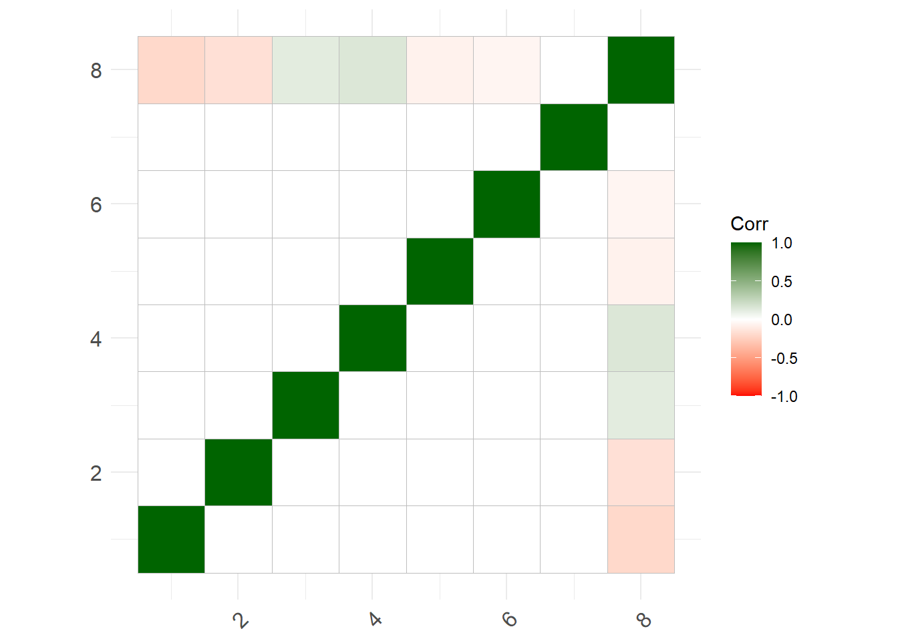
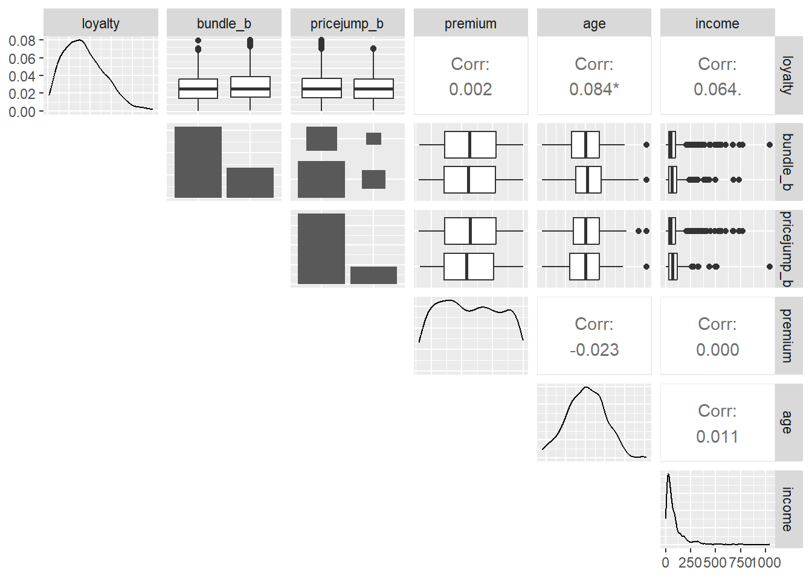

library(tidyverse)
library(gt)
library(patchwork)
library(GGally); library(ggcorrplot)
library(ggeffects) # amazing package plots marginal effects
library(simdata)
library(matrixcalc); library(mbend)
library(gmodels) # CrossTable()
library(skimr)
# this function in the simdata package builds a correlation
# matrix by specifying c(col, row, rho)
correlation_matrix = cor_from_upper(
8,
rbind(c(1,8,-0.20), # loyalty
c(2,8,-0.16), # bundle
c(3,8,0.12), # jump (in price)
c(4,8,0.15), # premium
c(5,8,-0.07), # age
c(6,8,-0.05), # income
c(7,8,0)) # mobile
)
# we require positive definite matrix
# is.positive.definite(correlation_matrix) = TRUE
if (!is.positive.definite(correlation_matrix)) {
correlation_matrix <- bend(correlation_matrix)$bent |> round(5)
}
ggcorrplot(correlation_matrix,
colors = c("red","white", "darkgreen"))
transformation <- simdata::function_list(
loyalty = function(z) qbeta(pnorm(z[,1]), shape1 = 2, shape2 = 5) * 30,
bundle_b = function(z) z[,2] > qnorm(0.7), #bundle
pricejump_b = function(z) z[,3] > qnorm(0.8), # 80th for 20% probability
premium = function(z) pnorm(z[,4]) * (2000 - 300) + 300, # premium
age = function(z) pmax(18, pmin(80, z[,5] * 10 + 40)), #age
income = function(z) exp(z[,6] + 4), #income
mobile_b = function(z) z[,7] > 0, #mobile
churn = function(z) z[,8] > qnorm(.8)
)
# the multivarate normal design specification
sim_design = simdata::simdesign_mvtnorm(
relations = correlation_matrix,
transform_initial = transformation,
prefix_final = NULL
)
sim_data = simdata::simulate_data(sim_design, n_obs = 1000, seed = 51493)
sim_data$churn <- as.factor(sim_data$churn)
sim_data$loyalty <- round(sim_data$loyalty, 1)
sim_data$bundle_b <- as.factor(sim_data$bundle_b) #ok
sim_data$pricejump_b <- as.factor(sim_data$pricejump_b) #ok
sim_data$premium <- round(sim_data$premium/10)*10
sim_data$age <- round(sim_data$age)
sim_data$income <- round(sim_data$income/10)*10
sim_data$mobile_b <- as.factor(sim_data$mobile_b) #ok
# don't use v1, instead will split into train/test sets
# model_sim_v1 <- glm(formula = churn ~ .,
# family = binomial(link = "logit"), data = sim_data)
# summary(model_sim_v1)
set.seed(7553695)
train_sample <- sample(1000, 900)
sim_train <- sim_data[train_sample, ]
sim_test <- sim_data[-train_sample, ]
data_scenario_range <- data.frame(
loyalty = c(25,20,15,10,5,1),
bundle_b = as.factor(c(TRUE,TRUE,TRUE,FALSE,FALSE,FALSE)),
pricejump_b = as.factor(c(FALSE,FALSE,FALSE,FALSE,TRUE,TRUE)),
premium = c(300,500,900,1100,1600,2000),
age = c(70,55,40,29,24,21),
income = c(200,150,120,100,80,60),
mobile_b = as.factor(c(TRUE,FALSE,TRUE,FALSE,TRUE,FALSE))
)
data_feature_means <- data.frame(
loyalty = mean(sim_train$loyalty),
bundle_b = as.factor(FALSE),
pricejump_b = as.factor(FALSE),
premium = mean(sim_train$premium),
age = mean(sim_train$age),
income = mean(sim_train$income),
mobile_b = as.factor(TRUE)
)
ggpairs(sim_train, columns = 1:6, lower = "blank")
skim(sim_train)| Name | sim_train |
| Number of rows | 900 |
| Number of columns | 8 |
| _______________________ | |
| Column type frequency: | |
| factor | 4 |
| numeric | 4 |
| ________________________ | |
| Group variables | None |
Variable type: factor
| skim_variable | n_missing | complete_rate | ordered | n_unique | top_counts |
|---|---|---|---|---|---|
| bundle_b | 0 | 1 | FALSE | 2 | FAL: 632, TRU: 268 |
| pricejump_b | 0 | 1 | FALSE | 2 | FAL: 720, TRU: 180 |
| mobile_b | 0 | 1 | FALSE | 2 | TRU: 463, FAL: 437 |
| churn | 0 | 1 | FALSE | 2 | FAL: 726, TRU: 174 |
Variable type: numeric
| skim_variable | n_missing | complete_rate | mean | sd | p0 | p25 | p50 | p75 | p100 | hist |
|---|---|---|---|---|---|---|---|---|---|---|
| loyalty | 0 | 1 | 8.49 | 4.83 | 0.2 | 4.8 | 7.9 | 11.5 | 24.9 | ▆▇▅▂▁ |
| premium | 0 | 1 | 1137.60 | 486.65 | 300.0 | 720.0 | 1120.0 | 1552.5 | 2000.0 | ▇▇▆▆▇ |
| age | 0 | 1 | 40.08 | 9.52 | 18.0 | 33.0 | 40.0 | 47.0 | 71.0 | ▂▇▇▃▁ |
| income | 0 | 1 | 87.72 | 106.29 | 0.0 | 30.0 | 50.0 | 100.0 | 1040.0 | ▇▁▁▁▁ |